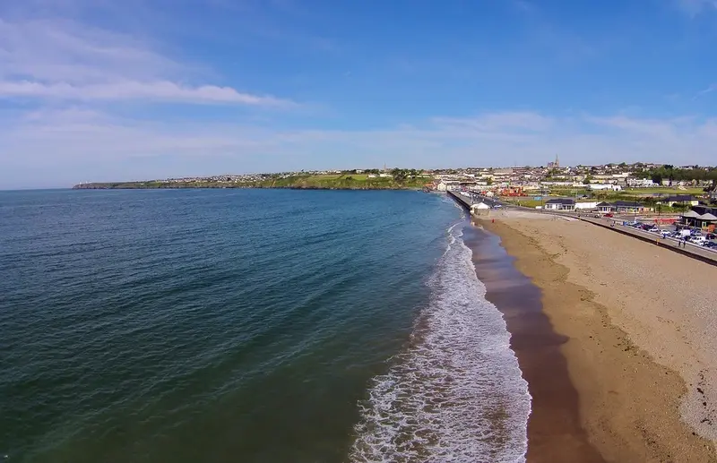
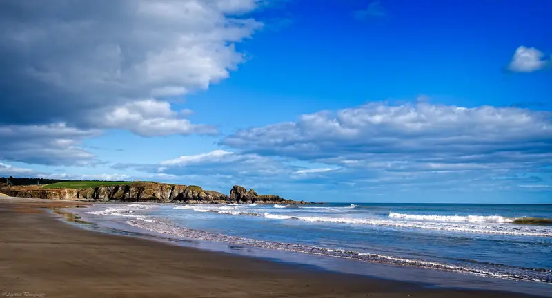
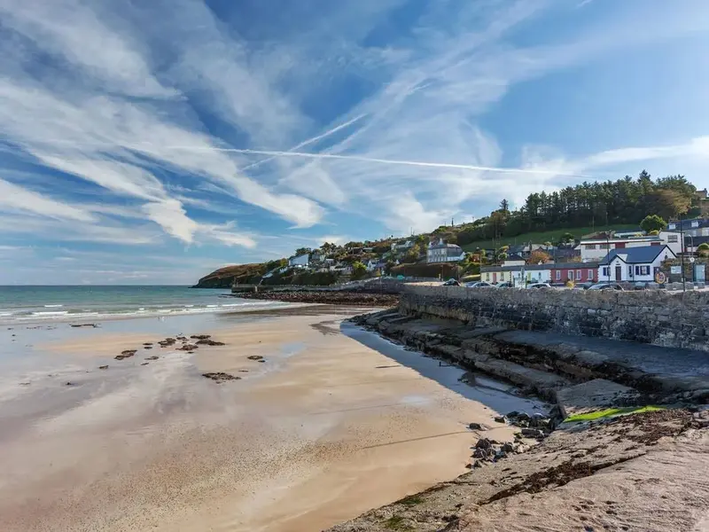
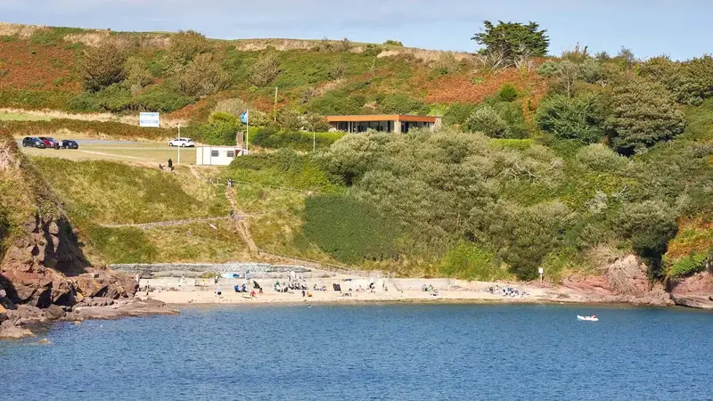
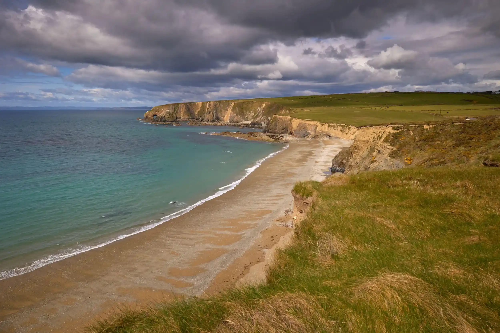

Beaches
Searching for beaches in Waterford? You're in the right place!
With a massive 147km of coastline and 49 beaches, we have highlighted below the best beaches and some of our favourites.
-
Tramore
Tramore Beach is the South East's leading holiday resort. Tramore has 5km of beach and sand dunes looking out into the Atlatnic Ocean. It also has a repuatation for surfing. 
-
Bunmahon
Bunmahon Beach is a 2.5km stretch of sandy beach and is backed by sand dunes. It is very popular with surfers and for canoeing and kayaking. 
-
Ardmore
Ardmore Beach is a sweeping beach and it's very popular with families because of its safe bathing waters. There is a wide range of activities to be enjoyed including kayaking, canoeing, stand up sea paddling or rock climbing for the more adventurous 
-
Councillors Strand (Dunmore East)
Councillors Strand is a small sheltered cove located approximately 15km southeast from Waterford City. visitors can enjoy swimming or underwater activities such as snorkelling in the sheltered and picturesque coves. Visitors are advised to be wary of the tide, which comes right in and covers the beach. 
-
Kilfarrasy Beach
Kilfarrasy is a popular beach with golden sand and a remarkable amount of cliffs inland that shelter the sand. On both sides of the beach, there are bizarre formations and a rock island that attracts a lot of attention. 